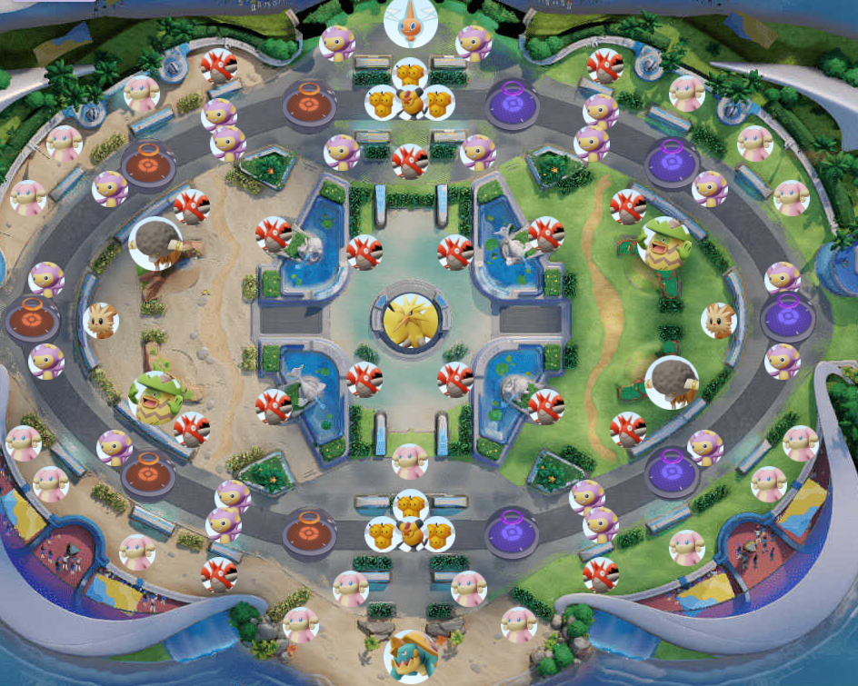
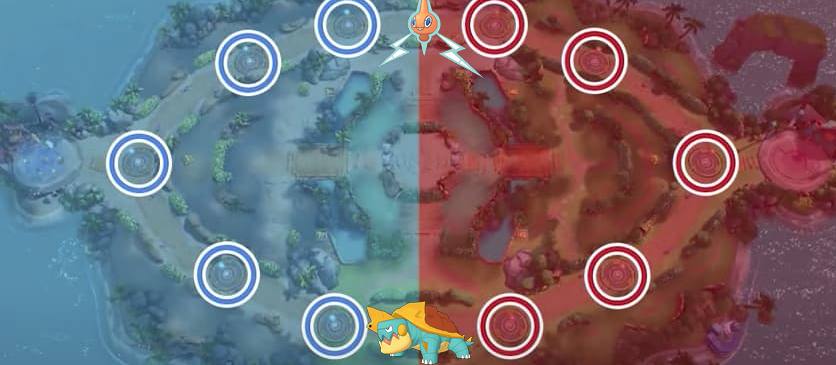

La map de Pokemon unite est composé de 3 axe, la jungle ,la toplane et la botlane.

Elle est également remplies de monstres à prendre pour gagner de l'exp.
Le temps de réaparition de chaque monstres est de 1 minutes après sa mort.
Le but pour chacun des perso est d'atteindre le niveau 13 qui leur confère un boost sur chacun de leur attaques
ainsi que leurs capacités spéciales.

Ces deux mobs donne des bonus d'exp à l'équipe qui acheve le mob.